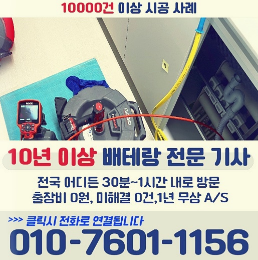
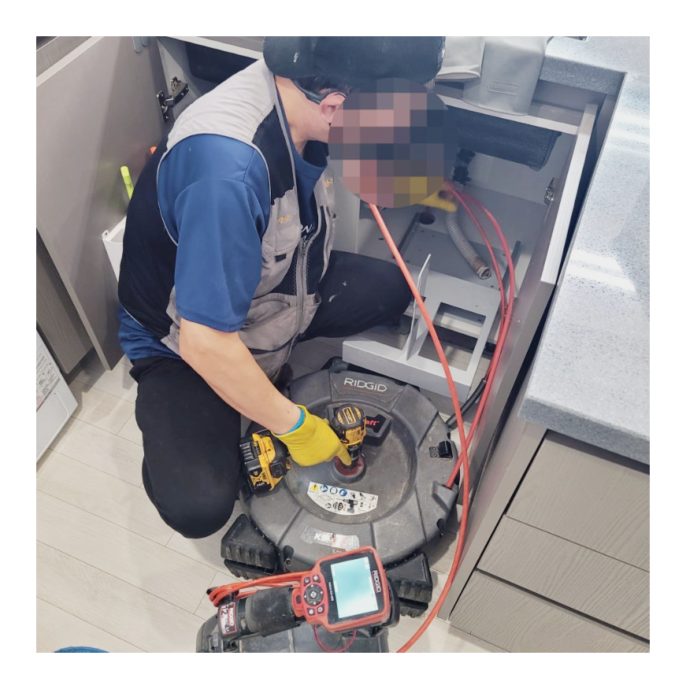
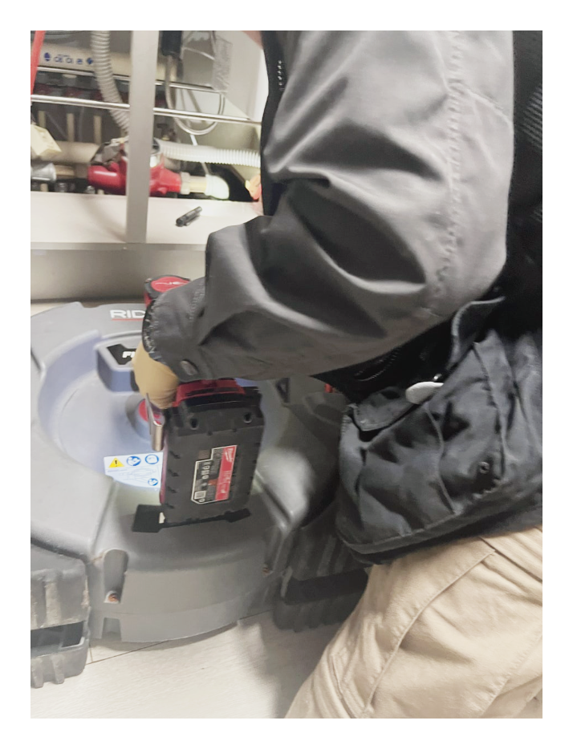
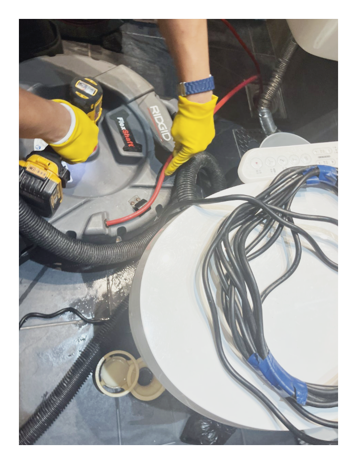
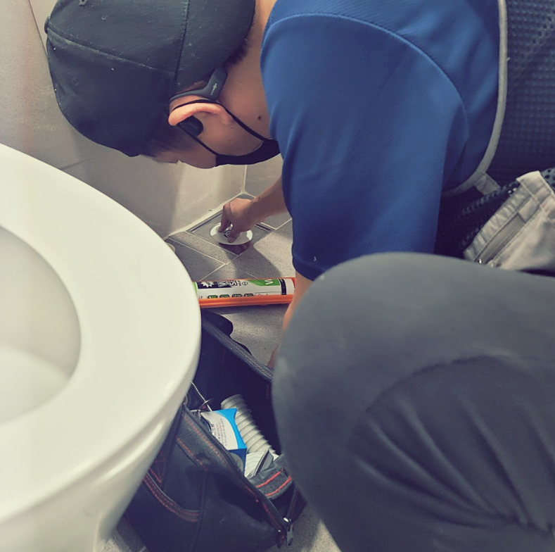
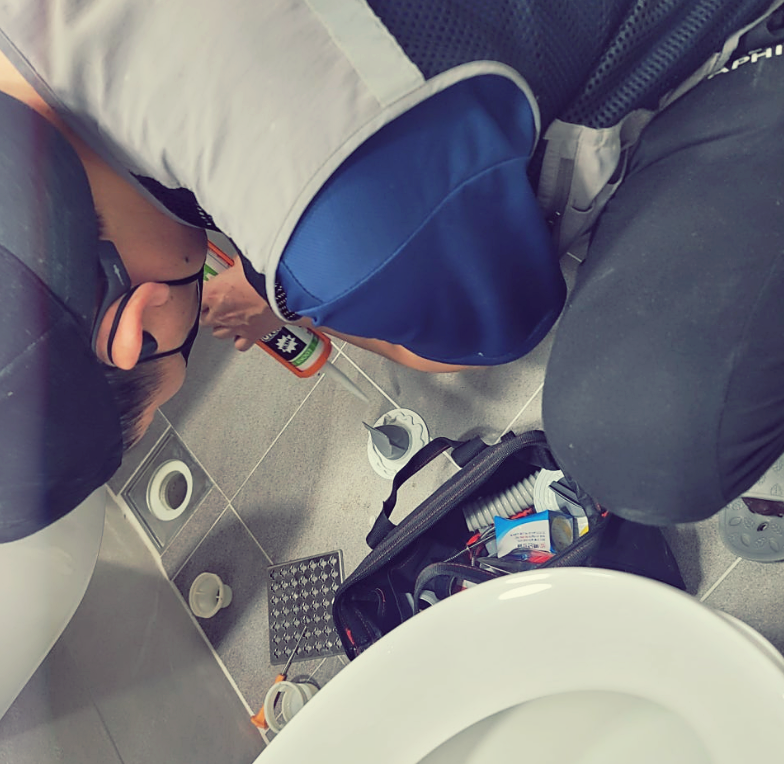
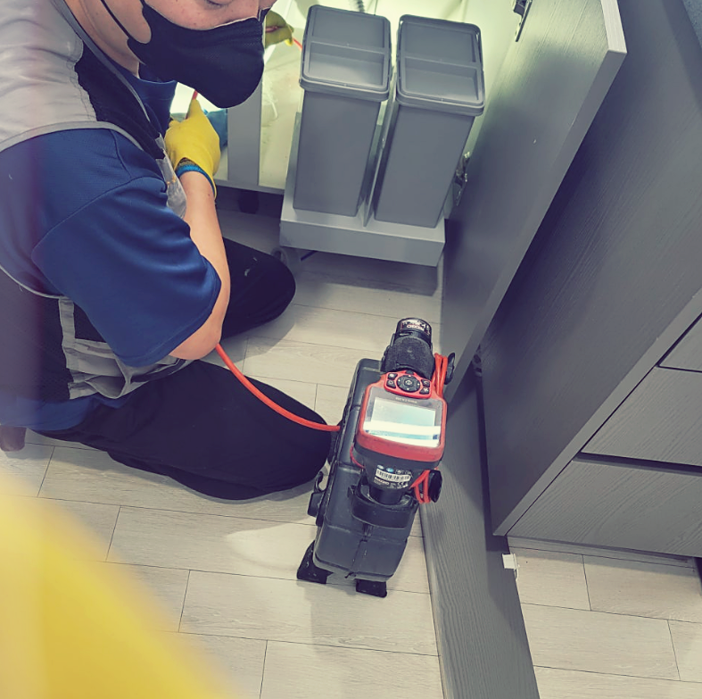
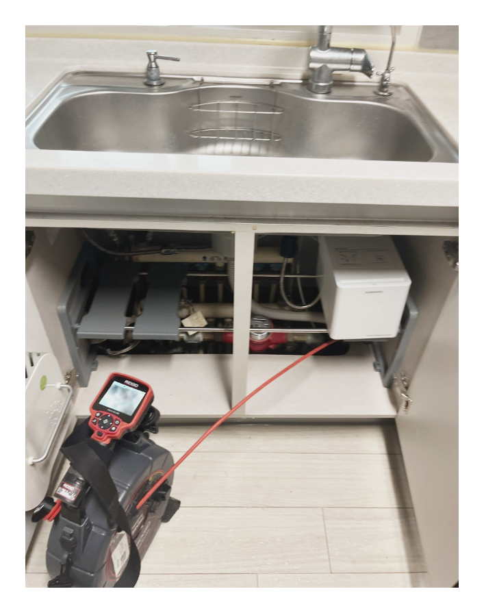
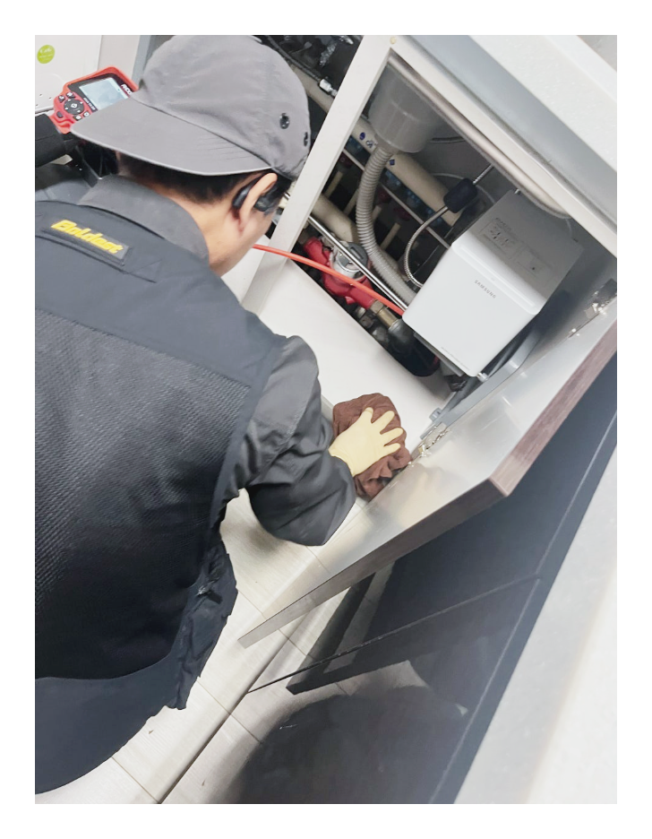
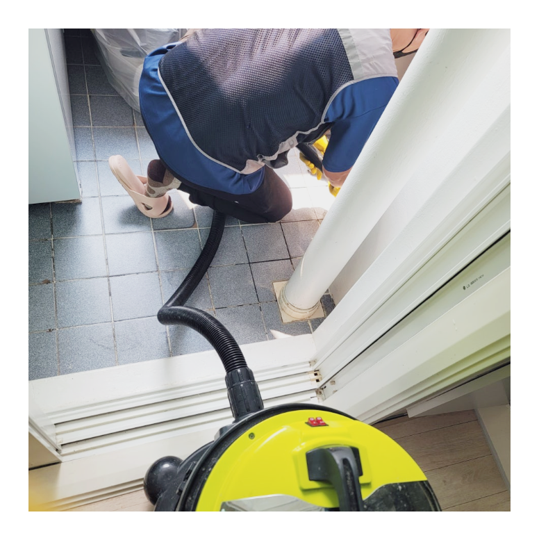

싱크대막힘
기름때, 음식물 찌꺼기, 배수관 막힘을 점검하고 해결합니다.
하수구막힘
욕실, 베란다, 바닥 배수구 역류와 악취 원인을 확인합니다.
변기막힘
변기 막힘, 역류, 물 내려감 불량 문제를 해결합니다.
배관내시경 · 고압세척
반복 막힘은 배관 내부 확인 후 장비 작업을 진행합니다.
성산구싱크대막힘 해결 전문업체 수리남케어
주방에서 설거지를 하다 보면 어느 순간 물이 천천히 내려가거나 싱크대 내부에 물이 고이는 현상을 경험할 수 있습니다. 이러한 증상은 대부분 배관 내부에 기름때와 음식물 찌꺼기가 쌓이면서 발생하게 됩니다. 성산구싱크대막힘 문제는 초기에는 단순한 불편함으로 느껴질 수 있지만 시간이 지나면 역류와 악취, 배관 손상까지 이어질 수 있기 때문에 빠른 점검과 해결이 중요합니다.
수리남케어는 성산구싱크대막힘 현장을 방문하여 배관 상태를 꼼꼼하게 점검하고 막힘 원인을 정확하게 파악한 후 적합한 장비를 사용하여 문제를 해결하고 있습니다. 무조건 강한 장비를 사용하는 것이 아니라 배관 상태를 고려하여 작업을 진행하기 때문에 배관 손상을 최소화하면서 막힘을 해결할 수 있습니다.
성산구하수구막힘 원인과 해결 방법
성산구하수구막힘은 욕실, 베란다, 세탁실, 주방 등 다양한 장소에서 발생할 수 있습니다. 배수구로 흘러들어간 머리카락, 비누 찌꺼기, 생활 오염물질이 배관 내부에 쌓이면서 물이 원활하게 배출되지 못하게 됩니다. 특히 오래된 건물의 경우 배관 내부에 이물질이 장기간 축적되어 반복적인 막힘이 발생하는 경우도 많습니다.
성산구하수구막힘 증상이 발생하면 단순히 물이 내려가지 않는 것뿐 아니라 악취와 역류 증상까지 동반될 수 있습니다. 이러한 문제를 해결하기 위해서는 막힘 위치를 정확하게 확인하는 것이 중요합니다. 수리남케어는 배관내시경 장비를 활용하여 배관 내부를 직접 확인하고 문제 구간을 찾아 효율적인 작업을 진행합니다.
또한 고압세척 장비를 사용하여 배관 내부에 쌓인 기름때와 슬러지를 제거하고 물 흐름을 원활하게 만들어 드리고 있습니다. 성산구하수구막힘이 반복적으로 발생하는 경우에도 원인을 찾아 근본적인 해결을 도와드립니다.
성산구변기막힘 빠른 해결이 중요합니다
성산구변기막힘은 갑작스럽게 발생하는 경우가 많아 일상생활에 큰 불편을 줄 수 있습니다. 휴지 사용량이 많거나 물티슈, 위생용품, 이물질 등이 변기에 들어가면서 배관이 막히는 경우가 대표적입니다. 초기에는 물이 천천히 내려가지만 시간이 지나면 역류 현상이 발생할 수 있어 주의가 필요합니다.
성산구변기막힘 문제는 무리하게 뚫으려고 시도할 경우 오히려 상황이 악화될 수 있습니다. 잘못된 작업으로 배관이 손상되거나 이물질이 더 깊숙이 들어가는 경우도 있기 때문입니다. 수리남케어는 다양한 현장 경험과 전문 장비를 바탕으로 변기 막힘 원인을 정확하게 확인하고 안전하게 해결해 드립니다.
배관내시경과 고압세척 장비 보유
배관 문제를 정확하게 해결하기 위해서는 원인을 확인하는 과정이 매우 중요합니다. 수리남케어는 배관내시경 장비를 활용하여 배관 내부 상태를 실시간으로 확인하고 있습니다. 눈으로 확인하기 어려운 구간까지 점검이 가능하기 때문에 보다 정확한 진단이 가능합니다.
배관 내부에 기름때와 슬러지가 많이 쌓여 있는 경우에는 고압세척 장비를 활용하여 깨끗하게 제거하고 있습니다. 배관 상태에 맞는 적절한 장비를 사용하여 작업을 진행하기 때문에 더욱 만족스러운 결과를 제공할 수 있습니다.
24시간 상담 및 출동 가능
성산구싱크대막힘, 성산구하수구막힘, 성산구변기막힘 문제는 시간과 장소를 가리지 않고 발생합니다. 갑작스러운 역류나 심한 악취가 발생하면 빠른 대응이 중요합니다. 수리남케어는 고객님의 불편을 최소화하기 위해 상담부터 현장 점검까지 신속하게 진행하고 있습니다.
배관 문제는 단순히 막힘을 제거하는 것보다 원인을 정확하게 파악하고 재발을 예방하는 것이 중요합니다. 성산구싱크대막힘, 성산구하수구막힘, 성산구변기막힘으로 고민하고 계시다면 수리남케어가 꼼꼼한 점검과 책임감 있는 작업으로 도움을 드리겠습니다. 언제든지 문의 주시면 친절하게 상담해 드리겠습니다.
성산구 주요 페이지
성산구싱크대막힘
주방 배수 불량과 역류 해결 안내
성산구하수구막힘
욕실, 베란다, 바닥 하수구 막힘 안내
성산구변기막힘
변기 막힘과 배수 문제 안내
창원 주요 페이지
창원싱크대막힘, 창원하수구막힘, 창원변기막힘 관련 안내 페이지입니다.
마산 주요 페이지
마산싱크대막힘, 마산하수구막힘, 마산변기막힘 관련 안내 페이지입니다.
작업사진












